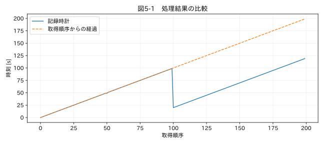

第II部 時間軸を修復する / 第05章
日時の欠損・重複・逆転
学習目標
取得順序を保存して時刻を検査し、同じ時刻の観測を自動削除しない。時刻リセットを区間として把握し、修復できる場合とできない場合を判断する。
5.1 まず並べ替えたくなる理由
グラフの線が左へ戻っていると、時刻でソートすればきれいになる。しかしロガーが再起動して時計が80秒戻ったなら、ソートは別々の運転時間の観測を交互に配置する。温度の連続性は壊れ、同じ時刻に複数の値が存在する理由も見えにくくなる。検査より前にソートしてはいけない。
教材 08_restart.csv は200行の測定で、取得順序を sequence 列に残している。時刻は50番の記録で一度重複し、100番で80秒戻る。温度自体は取得順に上昇する。記録時計と取得順序を並べた図5-1では、時計の異常が明瞭に現れる。
5.2 時刻の差分を調べる
隣り合う時刻の差を Δtᵢ = tᵢ − tᵢ₋₁ とする。負なら取得順に対する逆転、ゼロなら隣接する同時刻である。欠損日時との引き算は欠損になるため、差分だけでなく日時そのものの isna() も調べる。離れた位置にある同時刻を探すには duplicated(keep=False) を併用する。
差分が大きいことには、記録欠落、休止、時刻補正など複数の理由がある。負の差分にも時計リセットのほか、ネットワーク上で到着順が入れ替わった可能性がある。取得時刻と受信時刻のどちらが記録されているかを確認する。受信の順序を、測定した順序と無条件で同一視しない。
5.3 重複時刻の分類
同じ時刻で同じ値なら再送の疑いはあるが、分解能が粗い時計で独立に取得した値かもしれない。同じ時刻で異なる値なら、どちらかが誤りとは限らない。1秒内に10回測定しながら秒までしか出力しない帳票では、10点が同じ時刻になる。
| 観測された状態 | 考えられる原因 | 処理前に確認する情報 |
|---|---|---|
| 時刻・値・連番が一致 | 再送、ファイル重複 | 元パケット、ファイル境界 |
| 時刻一致、連番は異なる | 時刻の丸め | 時計の表示分解能 |
| 時刻逆転、連番は進む | 時計補正、再起動 | 再起動イベント |
| 受信順のみ逆転 | 通信遅延 | 機器内取得時刻 |
再送と確認できた場合も、原本から削除するのではなく、解析採用フラグを一方に付ける。元の両行と、どちらを代表として採ったかを残す。平均して一つにすればノイズは減るように見えるが、同じ値の再送を独立な標本として重み付けしてしまう危険がある。
関連する詳細実験は実践補講に掲載。入力形式・同期・補間・校正・多変量・チャンク境界を扱う。
実行するコードと結果
run.py · 共通処理の全ソース
教材フォルダで python examples/chapter05/run.py を実行。以下は省略のないスクリプト。共通モジュールは教材一式に含む。
from pathlib import Path
import sys
ROOT=Path(__file__).resolve().parents[2]
sys.path.insert(0,str(ROOT))
sys.path.insert(0,str(ROOT/'examples'))
import numpy as np
import pandas as pd
from common import load,truth,seconds,plot
from tsclean.core import numeric,timestamps,time_flags,hampel,freeze_candidates,interpolate_short,compare
df=load('08_restart');t=pd.to_datetime(df['時刻'],utc=True,format='ISO8601')
flags=time_flags(t,1)
print(flags[['time_duplicate','time_reverse','time_invalid']].sum().to_string())
print('逆転位置:',np.flatnonzero(flags.time_reverse).tolist())
plot(5,df['sequence'],{'記録時計':seconds(df),'取得順序からの経過':df['sequence']},'時刻 [s]',xlabel='取得順序')
検証環境での実行結果を開く
time_duplicate 159
time_reverse 1
time_invalid 0
逆転位置: [100]

5.4 修復の条件
時計リセットを補正するには、実際の時間の経過を推定する独立な根拠が必要である。連続した連番と確実な固定周期があり、再起動中に測定が続いていたことが分かるなら、連番から時間を再構築できる可能性がある。再起動中の停止時間が不明なら、リセット前後の時間差は確定できない。前後を別セッションとして扱う方が誠実である。
修復時刻の列は time_corrected のように新設し、原時刻、適用した補正、セッションID、根拠を保存する。日時の欠損を前方補完すると、複数点が同一時刻になり、速度や周波数の計算が破綻する。値の前方補完と同じ発想で時刻を埋めてはいけない。
5.5 丸めの影響
0.049秒と0.051秒を0.1秒単位へ丸めると、境界の両側に分かれる。一方、0.051秒と0.149秒は同じ0.1秒に落ちることがある。丸めは距離による対応付けとは異なり、境界次第で結果が変わる。後で系列を結合するときは、原時刻を保持して許容差を使う第17章の方法を検討する。
演習
基礎演習
教材の逆転位置を出力し、その直前と直後の時刻差を計算する。
応用演習
ソート前後で温度の一階差分を比較する。負の温度差が増える理由を、取得順序の混合から説明する。
実務演習
再起動前の最後の時刻は10:00、再起動後は00:00、実際の停止時間は不明だった。連番も0に戻っている。二つの区間を連続した時間軸に修復できるか。
演習解答・解説を表示する
基礎：逆転は0始まり100番で、99秒から20秒へ戻るため差分は−79秒である。「80秒の時計補正」と「隣接差分−79秒」を混同しない。
応用：時計リセット後の高い温度と、リセット前の低い温度が同じ時刻帯へ混在する。ソートは取得順を復元していない。
実務：一意に修復できない。外部のイベント記録や共通トリガーが必要である。各セッション内の相対時刻は利用できても、セッション間の時間差は未知として管理する。
章末まとめ
時間軸の検査は、取得順序を保った状態で行う。整列、重複処理、修復は検査の後に、独立した根拠を持って実施する。